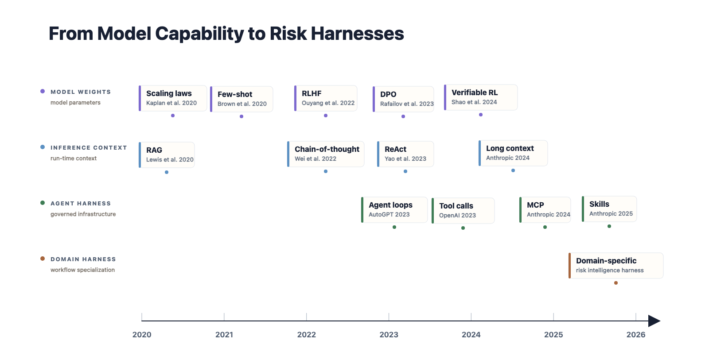

The Agent Risk Harness: Infrastructure for Risk Intelligence
Risk advantage comes from shifting the burden of agency: frontier intelligence reasons, while the harness supplies memory, procedure, and control.
An AI agent is only as useful as the context it can assemble, the tools it can invoke, and the constraints that govern how it acts. That is the practical purpose of a harness: to turn a model into a reliable system by surrounding it with the state, tools, evidence, procedures, permissions, and traces a task requires. A Risk Harness applies that pattern to risk intelligence: risk-specific memory, validated procedures, retrieval tools, permissioned protocols, and auditable decision traces.
For most of the deep learning era, and especially in the first years of modern LLMs, progress was understood primarily as something internal to the model: more parameters, more training data, better pre-training, novel architectures, and stronger alignment through post-training. But reliable agency does not emerge from larger or better-aligned models alone. It depends on persistent infrastructure outside the model: memory stores that preserve state over time, executable skills that package procedural expertise, and governed protocols that structure interaction with the rest of the world. Agentic design is moving outward from the parameterized model alone to the runtime systems that let a model recover context, follow procedures, use tools, respect constraints, and complete complex tasks reliably. That runtime is the agent harness.
This shift is especially important in risk work, where reliability is a requirement and the object of analysis is not a single document, diagnosis, or answer, but a distribution over future loss. Risk workflows combine heterogeneous evidence such as loss history, financials, submissions, market signals, litigation, regulation, operations, and internal data. An underwriter assessing a company's future litigation risk, a board committee diagnosing whether senior manager attrition is interacting with other risk signals to create broader exposure, or a due diligence team modeling tail risk for small companies needs persistent context, repeatable procedures, structured interaction with systems of record, and auditable traces that make answers inspectable.
RiskWise is built on the premise that high-stakes risk workflows require a harness. Drawing on Zhou et al.’s 2026 externalization framework, this post treats memory, skills, and protocols as the core layers of that harness. That is what makes a Risk Harness different from a generic agent harness. It specializes the harness for risk work by composing risk skills, memory, tools, and protocols. A skill like Risk Research plans and synthesizes the analysis; memory supplies risk-linked evidence, prior reports, key risk indicator state, traces, historical loss-calibrated context, current risk state, and forward-looking exposure signals; tools retrieve internal RiskWise data, search the web, and execute statistical analysis; and protocols govern tool calling, agent loops, citation, reflection, persistence, permissioned logging, and audit traces.
The same pattern is already visible in other high-stakes domains. Anthropic's Claude for Legal, for example, packages legal agents, tools, skills, protocols, and connectors around specific legal workflows. RiskWise applies that broader movement toward domain-specific agent infrastructure to risk intelligence.
Frontier Intelligence with a Risk Harness
The empirical signal is already visible. On Deep Research Bench (Du et al. 2025), scored with RACE on a 0-100 scale, we compare three conditions: parameterized knowledge, generic web retrieval, and the RiskWise harness. The current internal run evaluates Claude Opus 4.8, Claude Sonnet 4.6, and GPT-5.5 across Comprehensiveness, Insight, Instruction Following, Readability, and Overall quality on risk-specific tasks.
Because RACE is bounded at 100, we report the results two ways: relative score lift and relative gap-to-ceiling reduction. Score lift shows the direct improvement in RACE score. Gap-to-ceiling reduction asks how much of the remaining distance to a perfect score the harness closes.
Across models, RiskWise improves Overall RACE from 79 with web-only to 89 with the harness, a 12.7% relative score lift and a 47.6% reduction in the remaining gap to 100. Compared with the parameterized-knowledge condition, Overall rises from 72 to 89, a 23.6% relative score lift.
![Figure 1. RACE score decomposition on Deep Research Bench, averaged across Claude Opus 4.8, Claude Sonnet 4.6, and GPT-5.5. Bars decompose average score into parameterized knowledge, generic web retrieval lift, and RiskWise harness lift. The gray segment represents parameterized knowledge in the restricted no-info condition, an idealized baseline because agentic systems increasingly use external tools. The purple segment shows generic web retrieval lift; the green segment shows the additional RiskWise harness lift. Numbers above bars report relative gap-to-ceiling reduction versus web-only, computed as reduction in 100 - RACE.](../assets/img/posts/risk-harness-figure-4-frontier-model-performance.png)
The gray segment in Figure 1 should be read as parameterized knowledge under a restricted no-info condition. This is an idealization. Real frontier systems are increasingly agentic and may have access to filesystems, command lines, search, code execution, grep, and other external affordances. But as a benchmark control, it helps separate what the model can do without task-specific retrieval or harness support from the lift created by generic web retrieval and the additional lift created by the RiskWise harness.
The improvements are substantial across dimensions. RiskWise reduces the remaining gap versus web-only by 38.1% on Comprehensiveness, 52.2% on Insight, 56.2% on Instruction Following, 36.7% on Readability, and 47.6% Overall. The benchmark is therefore not just showing a generic web-search effect. It is showing the value of risk-specific context, retrieval, procedure, and governance.
The Externalization of Intelligence
For risk analysis agents, this shift matters because the hard part is not fluent text alone. It is assembling the right evidence, preserving state across time, following domain procedures, invoking tools safely, and leaving auditable traces. The timeline below is a compressed map of the broader shift from weights to context to harness infrastructure. Early work concentrated capability inside the model: scaling laws, few-shot learning, RLHF, DPO, and verifiable reward learning. The next wave expanded what the model could use at inference time: chain-of-thought, ReAct, retrieval, and long context. The current wave moves further outward into harness infrastructure: agent loops, tool calling, MCP, skills, and traceable control. A Risk Harness is the domain-specific version of that pattern: generic agent infrastructure specialized with risk memory, risk skills, risk tools, retrieval, and protocols.

Figure 2 is not a claim that one layer replaces the previous one. It shows where more of the task is organized over time: first in weights, then in inference context, then in governed harness infrastructure. RiskWise sits in the domain-specific harness layer. Model capability remains central, but risk judgment is externalized into governed memory, procedures, tools, retrieval, and protocols.
The architecture in Figure 3 turns this timeline into a agentic harness system design. Generic harness capabilities provide the runtime substrate; the risk-specific layer is where the judgment lives.

The important point is that the harness primitives (boxes) in Figure 3 are where competitive and product advantage start to accumulate. Memory can be reused. Tools can improve. Skills can be validated. Protocols can be governed. The legal example above is useful because it makes the category visible: domain-specific agent infrastructure is becoming a product pattern. RiskWise applies that pattern to risk intelligence, where the question is not just which model answers best, but what infrastructure lets risk judgment improve across workflows.
Closing thoughts
Recent agent research points toward a view that we believe applies most forcefully in regulated, high-stakes domains: the next generation of capable AI systems will not be larger models doing more in-context. They will be governed cognitive environments, harnesses, within which models operate as one component of a larger architecture. In that view, the question of what to put into the harness becomes the central design problem.
For risk, RiskWise is building toward that answer: an increasingly complete Risk Harness for high-stakes risk workflows. The product thesis is that advantage comes not from a better tool or more intelligent model, but from systematically building the reusable memory, skills, and protocols that different risk workflows can draw on. The next three posts go layer by layer. The final post returns to the platform question: how a Risk Harness expands from one workflow into a broader platform for risk intelligence.
References
Zhou, C., Chai, H., Chen, W., et al. (2026). Externalization in LLM Agents: A Unified Review of Memory, Skills, Protocols and Harness Engineering. arXiv:2604.08224.
Liu, H., Ming, Y., Joty, S., Zhao, C. (2026). Harnessing LLM Agents with Skill Programs. arXiv:2605.17734.
Trivedy, V. (2026). The Anatomy of an Agent Harness. LangChain.
Osmani, A. (2026). Agent Harness Engineering.
Anthropic. Claude for Legal. GitHub repository. https://github.com/anthropics/claude-for-legal.
← all writing